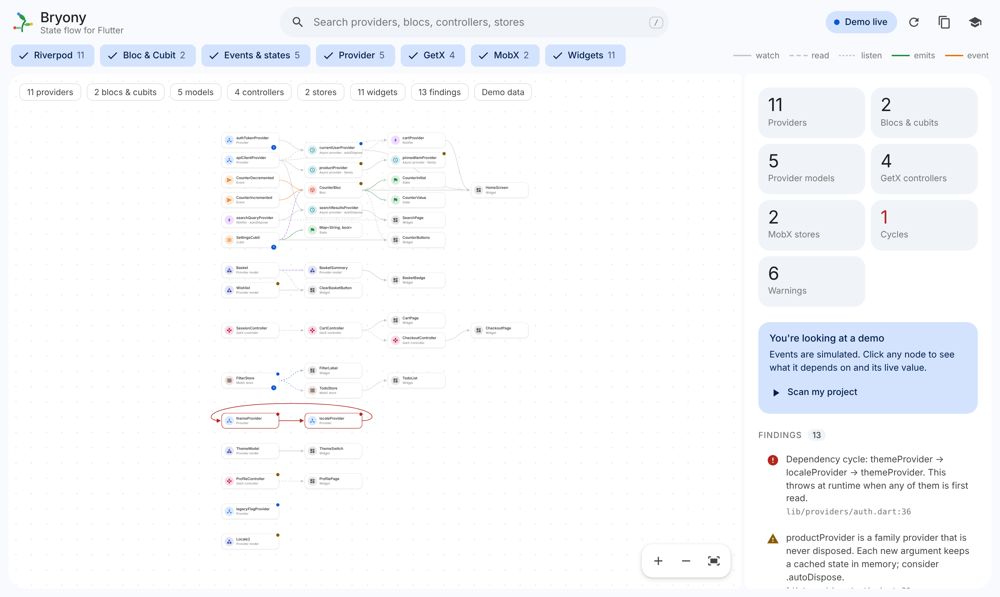
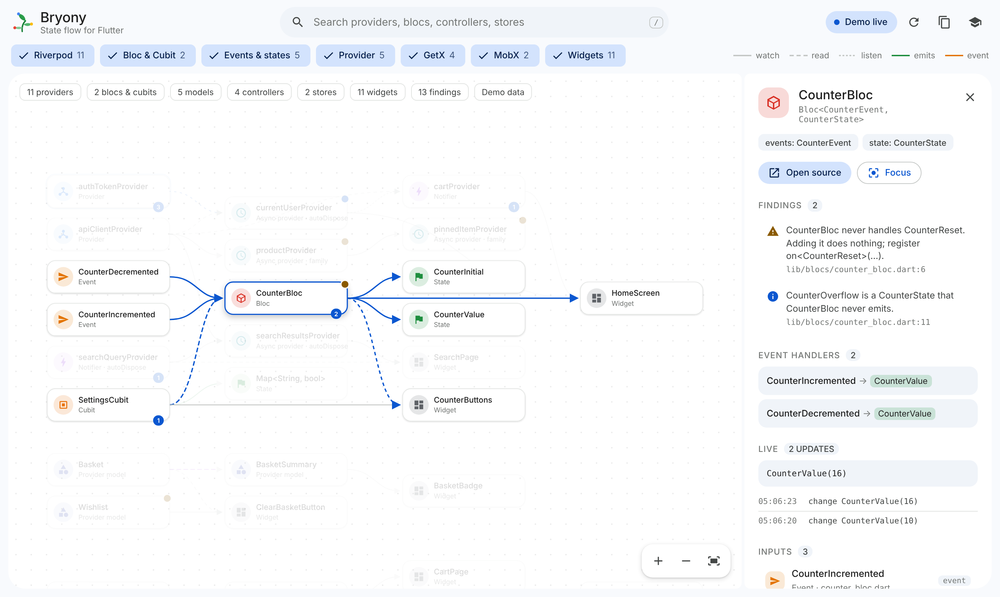
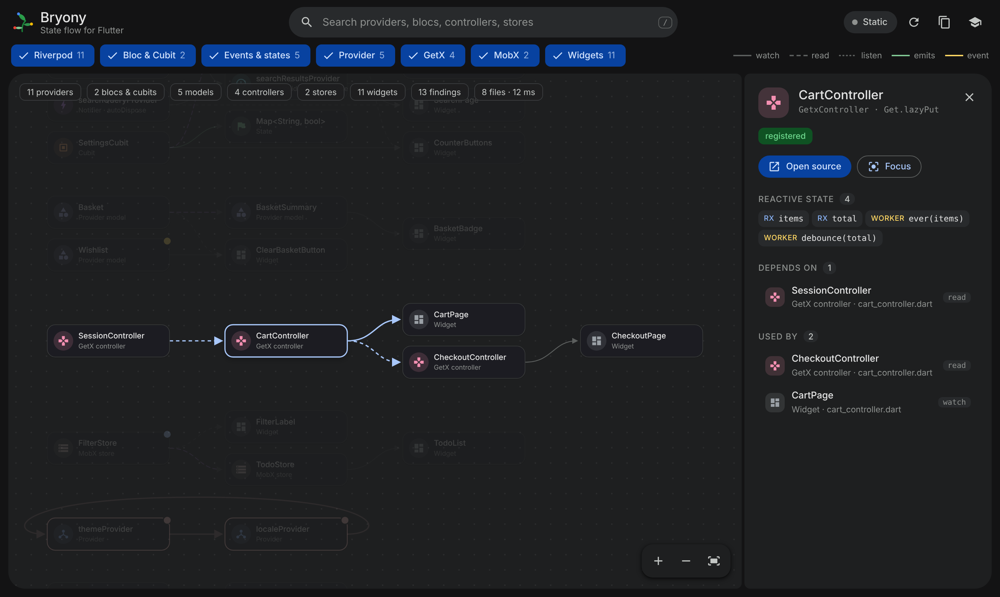
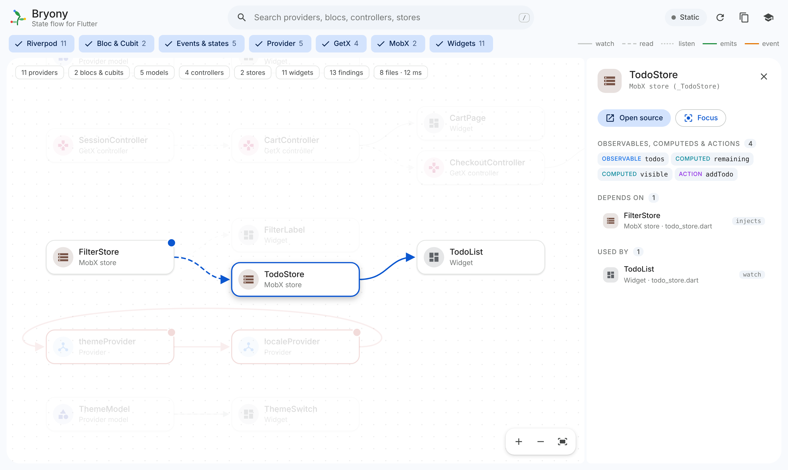
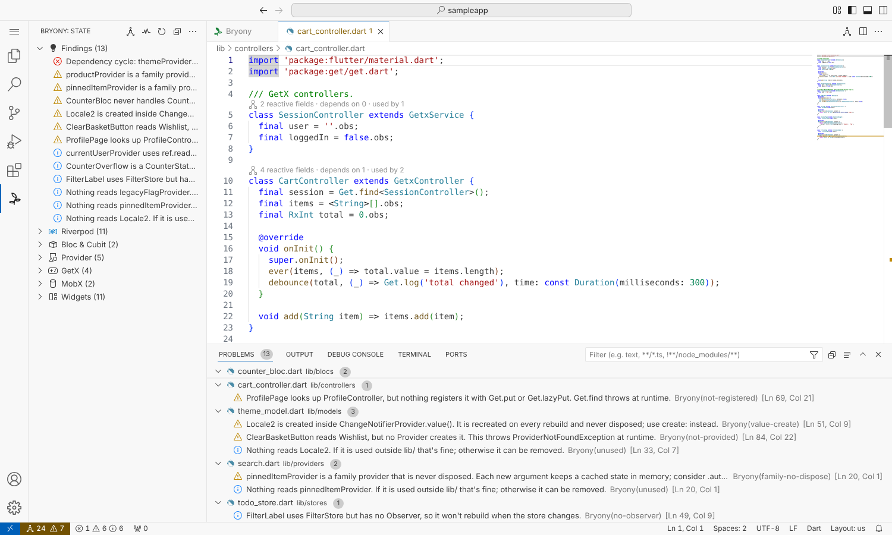

See how state flows through your Flutter app
Bryony draws your providers, Blocs, models, controllers and stores, and the widgets that use them, as one interactive graph inside VS Code. Start debugging and it comes alive.

Answers, not guesswork
What does this provider depend on? Who rebuilds when it changes? Why does Get.find throw here? Bryony shows you, with no code changes and no extra window.
Five libraries, one graph
Riverpod, Bloc and Cubit, Provider, GetX and MobX side by side. Perfect for apps mid-migration.
Trace anything
Click a node to light up everything upstream and downstream. Double-click to jump straight to the code.
Catch bugs early
Cycles, missing providers, unregistered controllers and more show up in the Problems panel as you type.
Live while you debug
One command adds a debug-only observer. Nodes pulse with update counts, the latest value and a timeline.
Every library, in detail
Each node knows its kind. Blocs show which events produce which states, GetX controllers list their Rx fields and workers, and MobX stores list observables, computeds and actions.




Findings that matter
Problems that usually surface only at runtime, flagged in the editor.
- Dependency cycles between providers
- Bloc events that are never handled
.familyproviders that are never disposed- Provider models that nobody provides
- Models created inside
.value(...) Get.findon a controller nothing registers- MobX stores used without an
Observer ref.readwhile building, and state nothing reads
Up and running in a minute
Works on Windows, macOS and Linux with VS Code 1.85 or later. Your code never leaves your machine.
Install Bryony from the Visual Studio Marketplace.
Open a Flutter project. A short tour shows you around.
Press Ctrl+Alt+G (Cmd+Alt+G on macOS) to open the graph.
Run “Bryony: Set Up Live Mode”, then start debugging.